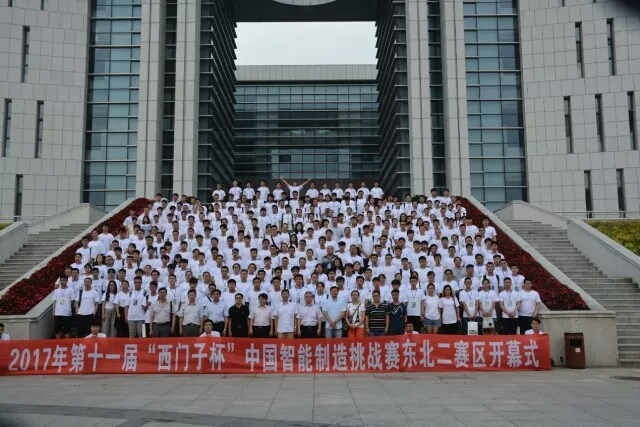
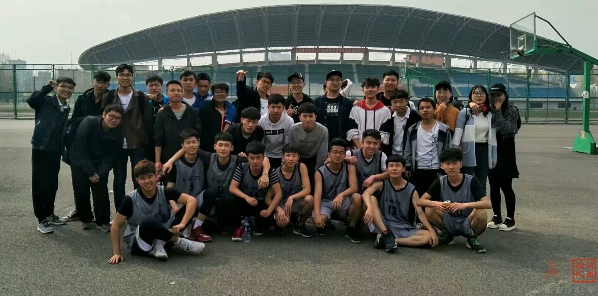

创新团队
创新的本质是突破，即突破旧的思维定势，旧的常规戒律。创新活动的核心是“新”，它或者是产品的结构.
性能和外部特征的变革，或者是造型设计、内容的表现形式和手段的创造，或者是内容的丰富和完善。
首页
关于我们
新闻生活
趣事分享
意见反馈
您现在的位置是：
首页
>
趣事分享
图片欣赏
更多>>
图片1
图片2
图片3
图片4
图片5
图片6
图片7

图片8
图片9
图片10
图片11

图片12
113
1
2
3
4
5
>
>>